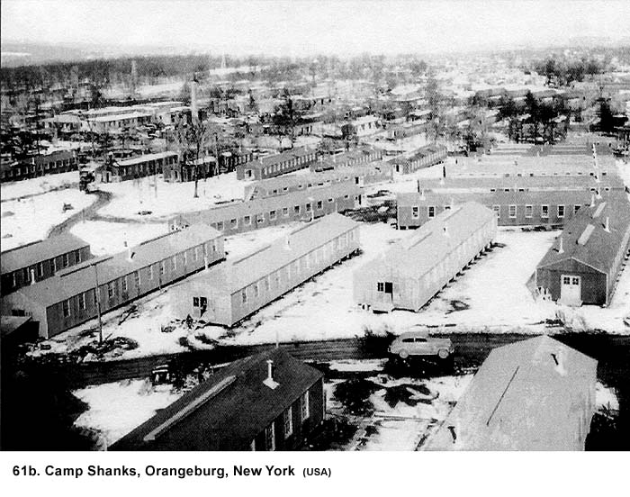

|
Table of Contents < - - - return Chapter 10 < - - - next
World War II Story by Robert F. Gallagher Chapter 9 - Getting Ready When a thing is done, it's done. Don't look back. Look forward to your next objective. George C. Marshall _______________________ In November 1944, we were finally notified we were going to be shipped overseas. This was no surprise because we had been expecting it for a long time, but it did raise a question. Why had our battalion been chosen to stay together as an antiaircraft unit? Most of the other antiaircraft battalions still remaining in Camp Haan were being disbanded with the soldiers being sent to other camps for infantry training. We knew enough about the war to conclude the Allied Air Forces had gaining air superiority over the enemy in both Pacific and European Theaters of Operations. They did not need as many antiaircraft units anymore. Men were needed in infantry units to replace the high rate of casualties this branch of service had sustained. It was no secret that branch of the service was dangerous. It was especially true at that phase of the war, when ground forces were battling all over the globe. None of us wanted to be assigned to an infantry outfit, and we felt extremely lucky to have avoided it.
By the time we were ready to leave the States, infantry casualties in the European Theater of Operations and to a lesser degree in the Pacific Theater had greatly exceeded estimates, creating a crisis in manpower. In the ETO, the invasion of Europe on D-Day, June 6, 1944, the bloody fighting in Normandy, and the continuing battle for northern France all took heavy tolls on the American foot soldier. Only the continuous feeding of replacements, the very rapid conversion of GIs from Army and Air Force support units, and students from the ASTP program bridged the gap. In many cases, the results were tragic because many of these men were ill-grounded in infantry tactics and became ready casualties themselves. Infantrymen constituted only fourteen percent of American troops overseas, but they suffered seventy percent of the casualties. We never officially got the answer why we were not disbanded with the other antiaircraft units, but we were sure it had something to do with the high scores we had achieved in gunnery practice. We learned that our outfit was the Top Gun for the whole camp, or at least that's the way it read on paper. The truth was, we were no better than any other battalion, but we had bigger liars keeping score for us. No one from our outfit talked about it much, but we were well aware of the deception going on. To outsiders, we kept our mouths shut, as we became willing if superficial participants in the plan. After almost a year and a half of training, we started to pack and get ready to leave Camp Haan. After our extensive training, we were well-disciplined soldiers and appropriately proficient in performing as an antiaircraft outfit. We knew this even though nobody in authority ever told us so; it was something we knew within ourselves. I was put in charge of packing everything in D-Battery for shipment. It would be nice to think I was given this assignment because of my organizational or leadership qualities, but in fact I was given it because I broke the number one rule in the Army: Never volunteer for anything. When First Sergeant Ambrose asked if anyone knew how to type, I said I did and realized immediately that I had volunteered for a job that required typing. Acknowledging you had any kind of unique talent was synonymous with volunteering. At least, in this case, the request by the sergeant for a typist matched the final assignment. Usually, requests were used as a ruse to make a fool out of someone. Actually, typing was only part of the packing job, and overall I really enjoyed the assignment. It was a change in routine and offered a challenge at a time when our training was getting very repetitive. I set up a card table just outside the supply barracks, borrowed an old Underwood typewriter, and preceded to organize the clothing, equipment, and armament we would need. All metal parts had to be waterproofed with a thick layer of Cosmoline the Army's version of grease. I had lists of items we were taking with us, and I directed the packing in the many-sized wooden boxes. After the men packed something up, I typed the proper forms and stenciled the box with the number of our unit. Those that were going to be shipped with us were stenciled with a big red T.A.T., which stood for To Accompany Troops. Typical of Army bureaucracy, every box we crated needed a packing list with sixteen copies. There were no copier machines in those days, so each invoice was typed five times with carbon copies. Usually, the last copy of each set was so faint you could not read it but most of the copies were never used anyway. Some of them are probably still sitting in some government warehouse. Everything but the big guns with their carriages and the trucks had to go into boxes. Whenever there was some room in a box, I would add some of the men's sleeping bags. These were the large ones we had purchased at the PX. The ones that the Army had issued were too small to put blankets inside and were not nearly as good as the others. The PX models were too big to fit into our duffel bags, the only other place we were allowed to carry them. Some of the men wanted to smuggle beer and whiskey in the packing boxes, but I told them they could not do it. However, because I could not be there at the packing site at all times, I am quite sure there were things stowed away I did not see. I had a hard time getting help for this assignment because everyone was more interested in getting their final passes or furloughs in the California area. I worked all day and most of the night trying to meet a deadline. Things changed when word got out no one would leave the camp until everything was crated. Then, I had dozens of men surrounding me at my typewriter ready to go to work, and things were done in an expeditious manner. Each man's personal equipment and clothing were inventoried to make sure he had all the proper items. We turned in the fatigue uniforms we had worn most of the time in California. From that day on, the uniform was to be the woolen OD uniform. The Eisenhower jacket went into the bottom of the duffel bag because we wore it only when we were on passes, which would become less frequent from then on. When the weather required it, we wore our field jackets as an outer garment. We were missing some equipment for our unit, and despite our written requests to the local ordinance department, it had not arrived a few days before we were to ship out. Men were sent over to ordinance at night to steal the equipment. This procedure was known in the Army as midnight requisitioning. The thefts were made easier because our outfit was furnishing the guards for the supplies. There were some sad farewells as we loaded up and prepared to leave Camp Haan by train. Many of the married soldiers had brought their wives out to California to stay near the camp, and there were many tears shed as the women said farewell to their husbands. To the rest of us, it was just the next step of our Army stint. There was no fear about what was to come but no joy either in leaving the sunny land of southern California. We all had enjoyed the wonderful weather and the many entertainment facilities. We started out hating Camp Haan but had learned to appreciate it, at least in comparison to many other camps we had heard about. Several months had passed since we had been out to Camp Irwin in the desert and, evidently, we had forgotten what a miserable place that was. It would not be missed. While we were preparing to leave, a friend of mine named Dan (not his real name) from Battery C came to see me. Dan and I had been friends in Chicago before the war and had gone into service on the same day. We had gone through grammar school together, and he had been part of my neighborhood gang at one time. However, our friendship had somewhat cooled while in the service because Dan and I were opposites in just about everything we did. When we first arrived in California, we had gone out on several passes together where our differences were highlighted. We had not gone anywhere together since that time, but I would see him frequently at the PX and other places in the camp area and out in the desert. Dan came to tell me he was not going overseas with our unit. I had noticed he was limping badly when he entered my hut. He said he had injured his leg in an auto accident and the Army doctors had told him he was not capable of overseas duty. I had the feeling Dan was faking this injury, but I wondered how he could fool the doctors. Later, several men from his battery who bunked in the same hut with him told me they were sure he was faking because they had seen him at times when he did not have the limp. They also voiced their displeasure with him in deserting their ranks just before we shipped out to go overseas. I wondered at that time how much influence Dan's father had in the matter because I remember him as being very pro-German. The family was of German heritage, and, despite some effort to hide their political views, they espoused the belief Roosevelt was getting us into a war with Germany where we did not belong. Dan's father attended meetings of the German-American Bund Party until the American Government outlawed it. He was quite upset when Dan was inducted. While we did not know where we were going to be sent overseas, the probability of it being to Europe was strong. Dan stayed in Camp Haan when we shipped out. Later, he was sent to the Panama Canal Zone where he became a staff sergeant for the duration of the war. I always felt there was more to that story, but I was never able to find out what it was. On November 21, 1944, we boarded a train, pulled out of Riverside, and took a six-day trip across the country to New York City. When stopped along the way, the Red Cross showed up to serve us donuts and coffee. The passenger cars we traveled in were made specially for hauling troops. They were square in shape, painted gray and more closely resembled boxcars than passenger cars. Inside they were functional with seats that folded into bunk beds at night. Despite their lack of frills, the cars were comfortable and met our basic needs. The closeness of many men in this confined area for such a long period of time could have created some hostility, but the opposite took place. For some reason, there was a feeling of good cheer, and for most of the trip the atmosphere resembled a big party. There was a lot of acting up, kidding, and telling jokes. If we had any apprehension about our going overseas, it was certainly not visible. The train stopped at the La Salle Street Station in downtown Chicago for about eight hours, but we could not get off, not even to make phone calls. Only one person was able to contact anyone. His father was a Chicago police sergeant, so he yelled his father's name out the window of the train to one of the policemen standing on the platform. In about twenty minutes the man's father showed up. Army MPs were stationed along the platform to assure we did not get off or anyone got onto the train. The cop found the car where his son was located and, as he headed toward the door, an MP tried to stop him but he was no match for this burly streetwise cop. He brushed the young MP aside like he was swatting a fly. As more MPs converged on the scene, they decided to make this one exception because the situation also drew more policemen. A number of us who got to meet the sergeant gave him our phone numbers in Chicago so he could call our parents to tell them we were headed east. We could speculate about where we were going, but the only thing we knew for sure was the direction we were headed. After we left the station, the train headed south and then turned east again. I knew we were passing my old neighborhood on the south side of the city when I spotted the large, brightly illuminated sign of the Avalon Theater. It brought back many fond memories of my days as a civilian because it was only a few blocks from where I would hang out with my civilian buddies. Soon after, the train passed less than a block from where my parents lived, but it was raining hard at the time and I did not get a good look at my old neighborhood.
We arrived at Camp Shanks (See Fig. 61b), located near Orangeburg,
New York, about thirty miles up the Hudson River from New York City, to wait for
debarkation.  The camp was known as a staging area for the Port of Embarkation (POE). The change in temperature was hard to get used to because the weather there was extremely cold. We had come from an extended stay in the warm temperature of California into the cold winter weather of New York. The barracks there offered the same sterile environment of all Army camps, but we had gotten accustomed to this look by now. We had no idea where we were going yet, but the Pacific Theater of Operations seemed to be ruled out. We were thankful for that because stories coming back from there since the beginning of the war told of the fanatical way Japanese soldiers were fighting and the rotten climate in most of that area. Later, we would learn that conditions in the European Theater of Operations would be different but not necessarily that much better. We received a new round of shots.
Chapter 10 < - - - next Table of Contents < - - - return
Footnotes and Source of Photographs. Copyright, Robert F. Gallagher, 1999 - 2015, all rights reserved on all images and content.
|